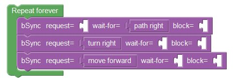

In this level we have seen a new block,bSync.
Using bSync you can request, wait-for, and block events.

The first scenario is responsible for handling a right turn. The scenario waits for the event, 'path right' and then requests to 'turn right' and 'move forward'. All of these are achieved using bSync.

The second scenario is responsible for moving the pegman forward.
The scenario constantly requests to 'move forward' using bSync.
Let's continue to the next level!